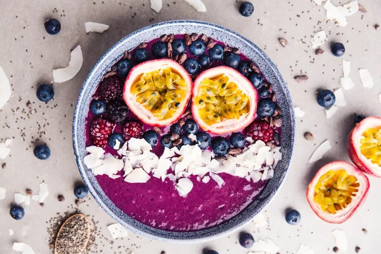

Smoothie Bowl
Schwierigkeitsgrad:
⭐⭐⭐
Eine Smoothie Bowl ist nicht nur super Instagram-tauglich, sondern eignet sich auch perfekt als Diät Frühtsück. Sie ist kalorienarm und schmeckt frisch und fruchtig. Und das Beste: Ihr könnt die Früchte je nach Belieben austauschen. Wir zeigen
euch eine Variante mit Mango und Beeren.

Zutaten für die Basis:
| 200g |
Gefrorene Beeren |
| 100 ml |
(Pflanzen-) Milch |
| 1 |
Banane |
| Eventuell |
Agavendicksaft zum Süßen |
Zutaten für das Topping:
| Eine handvoll |
Obst (Himbeeren, Erdebeeren oder Mango) |
| Etwas |
Hafercrunchy oder Granola |
|
Kokosraspeln |
|
Chiasamen |
Zubereitung:
- Gefrorene Beeren in eine Schüssel geben und kurz antauen lassen. Beeren anschließend in einen Mixer geben (hier bei Amazon shoppen)*, Banane und etwas (Pflanzen-) Milch hinzufügen. Alles gut durchmixen. Je nach Bedarf mit etwas
Agavendicksaft süßen. Die cremige Masse in eine große Schale geben.
- Nun könnt ihr die Bowl ganz nach eurem Geschmack garnieren. Dafür die Früchte euer Wahl in mundgerechte Stücke schneiden und anschließend auf der Bowl anrichten. Kokosraspeln und Chiasamen über das Obst streuen. Zum Schluss noch
etwas Hafercrunchy oder Granola über eure Bowl streuen. So lecker!
Vorsicht: Achtet bei fertigen Granola oder Hafercrunchy-Mischungen darauf, dass sich darin nicht zu viel Zucker versteckt.